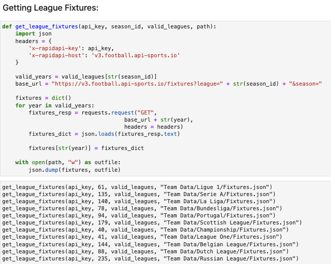

Football Simulator Game: Save the World
Hello, my name is Asad. Today, I'm presenting something I worked on during the 2nd semester of the 2022-23 school year. This is a football simulator game, centered around strategy and statistics. In this immersive experience, players are challenged with the task of assembling the ultimate team of footballers within a limited budgetary constraint (£850). Each footballer's quality is reflected in his price, with higher-rated players costing more. Once the team has been meticulously crafted, players dive into a tournament featuring 128 teams. Among them, 127 teams are dynamically generated, each employing a unique formation and the best possible players from their assigned pool.
How did I get this idea? Well, I created a text-based football simulator in the past (my 1st semester at uni). It was my first real coding project, and I loved every minute of it, because A) I love football, B) I like coding, and C) I really like statistics, game theory, decision trees, etc. However, the quality of the code was quite poor. For example, look below at the code I used to validate a player's selection (in these 2 instances, I was checking if the input somewhat resembled Timo Werner or Raul Jimenez):

🙈 This is why algorithms are important. Had I learned about tries/prefix trees, I would've avoided writing 600+ lines of poor code like that (yes, I did that for every single player). Thankfully, having taken multiple classes on algorithms since, and having done my own independent study of algorithms, I now know the way. I actually utilised tries heavily in another project I worked on this semester, but I will save that chat for a later github.io page. Regardless, I appreciate the efforts and zeal of my past self, as without this past work, I wouldn't have been able to complete this massively superior project.
In the words of esteemed artist Prodigy (rest in peace), let me start from the beginning, at the top of the list. To start, I wanted to get historical lineups from the past 5 years of all the top leagues (Bundesliga, Premier League, Serie A, Ligue 1, and La Liga), and utilise this information via deep learning to predict football matches, given 2 random teams. However, I needed something a bit extra to assign a certain quality value to a team. Unfortunately, there's nothing in these kinds of records that can singlehandedly measure a team's true quality. At first thought, scorelines could be a valid measure, but that's not always the case. For example, look at the image below:

Okay, so two teams played each other in a tournament, with one ultimately staging an incredible comeback from 2-0 down, away from home, to win 4-2. Big deal. Impressive, but this happens fairly often in sports. But, at the time, Bradford City were in the 3rd division of English football, where they ultimately finished 7th place (and they are now in the 4th division). Chelsea, on the other hand, were in the 1st division (Premier League) and top of the table at the time, ultimately winning the league in dominant fashion. Additionally, they fielded the team below:

They had 3 world-class players on the pitch (Hazard, Cesc, Azpilicueta), along with various other quality players (Ramires, Oscar, Remy, Willian, Cahill). Even the likes of Salah and Zouma, both of whom were fairly underwhelming for Chelsea (to be fair to Zouma, he suffered an ACL injury at age 21), have had fantastic careers after they've left the club. Salah has established himself as (arguably) Liverpool's best ever player, amongst the likes of Dalglish, Liddell, Rush, and Jay Spearing, whilst Zouma is currently West Ham's best defender. Point is, they had quality all over the park, and they had enough firepower to smash Bradford 4 or 5 nil.
But, this is football, and these shock results happen fairly often. So we cannot use them, or shots on target, or possession, or any of these other (fairly) arbitrary statistics to measure a team's quality. Instead, I decided to use FIFA ratings for individual players and map them to historical match data to correlate shots, possession, fouls, and goals with the quality of a side. I downloaded some CSV sets off of Kaggle for the past 9 FIFA games.

For the lineup information, I used api-football.com. Basically, I used the API to get fixtures from the 15-16 season onward, matching the FIFA data. From the fixtures, I collected the stats associated with each individual match (e.g. shots on target, fouls, goals, etc.), but I had to make separate API calls to each fixture in order to collect the lineups associated with each match.
